Chapter 9 Support Vector Machines (SVM)
One of the best “out of the box” classifiers.
Mostly intended for two-class classification problems.
Idea: Try and find a plane that separates the classes in feature space.
- We will talk about
- Maximal Margin Classifier
- Support Vector Classifier
- Support Vector Machine
9.1 Hyperplane
In \(p\)-dimensions, a hyperplane is a flat affine subspace of dimension \(p-1\).
Mathematical form of a hyperplane
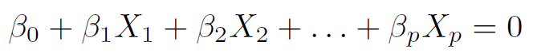
- When \(p=2\), a hyperplane is a line.
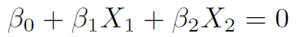
If \(\beta_0=0\), the hyperplane goes through the origin, otherwise not.
A hyperplane divides the \(p\)-dim space into 2 halves.
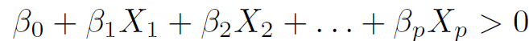
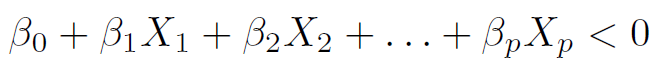
9.4 Separating Hyperplane
For a two-class problem, suppose that it is possible to construct a hyperplane that separates the training observations perfectly according to their class labels.
Such a hyperplane is known as a separating hyperplane.
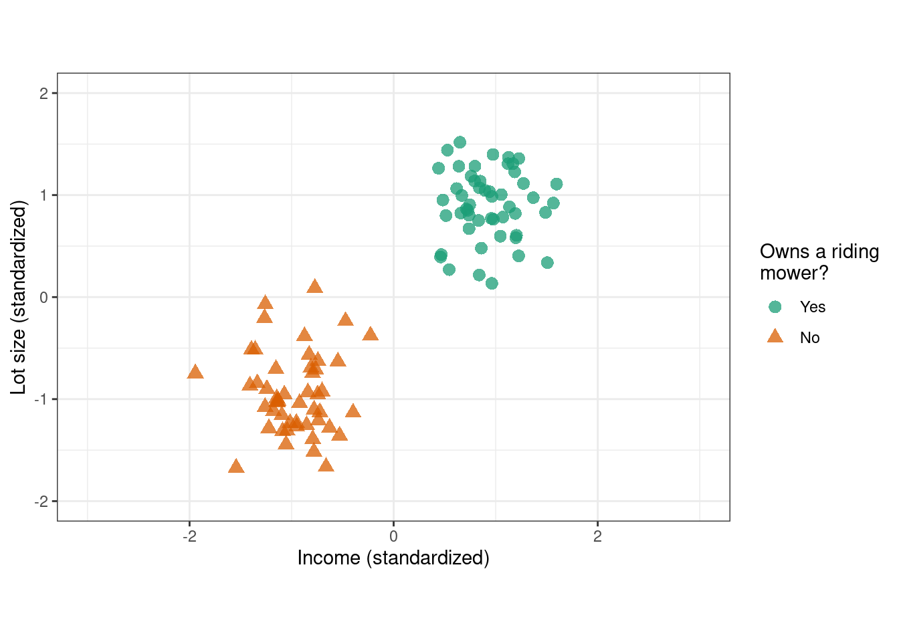
9.5 Separating Hyperplane
For a \(p\)-dimensional two-class problem,
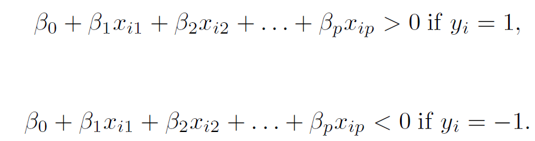
Equivalently, for \(i=1,2,\ldots,n\)
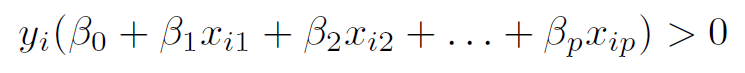
Consider a test observation \(x^*\), we compute \(f(x^*)\).
A classifier based on a separating hyperplane leads to a linear decision boundary.
9.6 Optimal Separating Hyperplane
This is also known as the maximal margin classifier or hard margin classifier.
One that makes the biggest gap or margin between the two classes.
One that is farthest from the training observations.
Margin: The minimal (perpendicular) distance from the observations to the hyperplane. Denoted by \(M\).
The maximal margin hyperplane is the separating hyperplane for which the margin is largest, that is, the hyperplane that has the farthest minimum distance to the training observations.
9.8 Optimal Separating Hyperplane
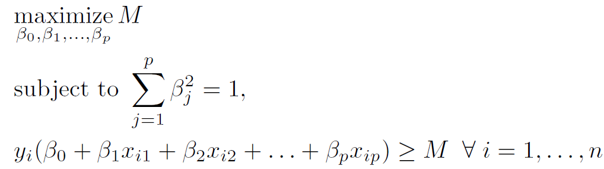
The second constraint guarantees that each observation will be on the correct side of the hyperplane (\(M\) positive).
The first constraint ensures that the perpendicular distance from \(i^{th}\) observation to the hyperplane is \[y_i \left( \beta_0+\beta_1 \ x_{i1}+\beta_2 \ x_{i2} + \ldots + \beta_p \ x_{ip}\right)\]
9.9 Optimal Separating Hyperplane: Issue 1
The optimal separating hyperplane fits the data too hard.
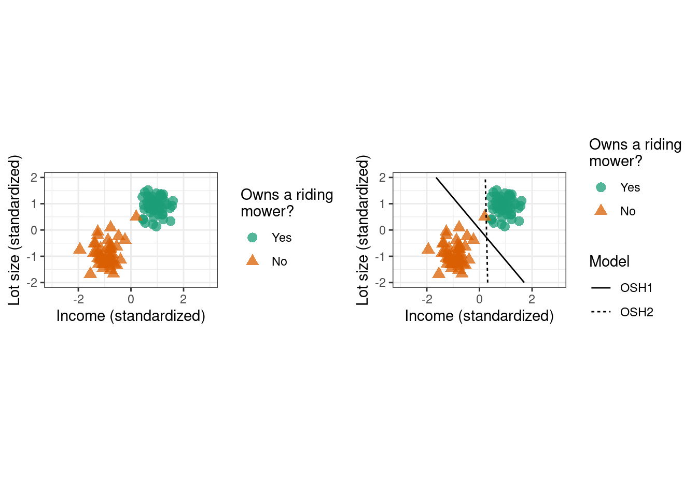
9.10 Optimal Separating Hyperplane: Issue 2
An optimal separating hyperplane may not always be possible to construct, that is, non-separable data. This is often the case, unless \(n<p\).
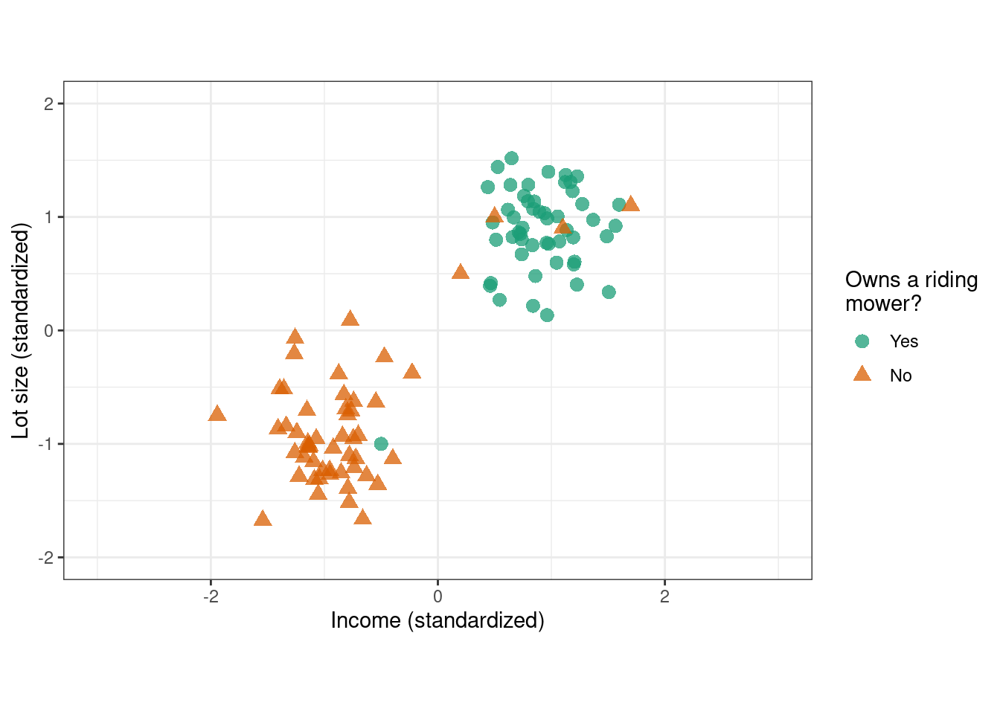
9.11 Support Vector Classifier
We might be willing to misclassify a few observations for
greater robustness to individual observations, and
better classify most of the observations.
This leads us to the support vector classifier. Also called the soft margin classifier.
The margin is soft because it can be violated by some of the training observations.
9.12 Support Vector Classifier
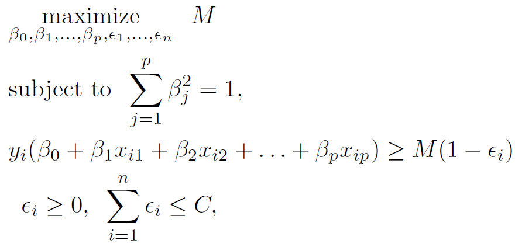
\(M\): width of the margin
\(\epsilon_1, \ldots, \epsilon_n\): Slack variables
\(C\): Budget (tuning parameter)
9.13 Support Vector Classifier
set.seed(022823) # set seed
library(kernlab) # load library
# implement CV to find optimal C
svc_cv <- train(y ~ .,
data = svcdata,
method = "svmLinear",
trControl = trainControl(method = "repeatedcv", number = 10, repeats = 5),
tuneLength = 20,
metric = "Accuracy")
svc_cv$bestTune # optimal C## C
## 1 1# fit model with optimal C
final_model_svc <- ksvm(y ~ .,
data = svcdata,
kernel = "vanilladot",
C = svc_cv$bestTune$C,
prob.model = TRUE) # needed to obtain predicted probabilities## Setting default kernel parameters9.15 Support Vector Classifier
final_model_svc # number of support vectors## Support Vector Machine object of class "ksvm"
##
## SV type: C-svc (classification)
## parameter : cost C = 1
##
## Linear (vanilla) kernel function.
##
## Number of Support Vectors : 16
##
## Objective Function Value : -14.2888
## Training error : 0.047619
## Probability model included.alphaindex(final_model_svc) # which observations are support vectors## [[1]]
## [1] 16 17 21 22 31 49 55 56 88 96 97 101 102 103 104 1059.18 Feature Expansion
The problem of non-linear boundaries can be solved by enlarging the feature space (like in linear regression) using transformations of predictors.
Fit a support vector classifier in the enlarged space.
Results in non-linear boundaries in the original space.
9.20 Feature Expansion
A kernel function quantifies the similarity between two observations. It helps in transforming the original feature space to an enlarged feature space where the data points can be separated by a linear boundary.
Commonly used kernel funtions are
- Polynomial Kernel of degree \(d\)
\[k(x_i, x_{i'}) = \left(1+scale\sum_{j=1}^{p} x_{ij} \ x_{i'j} \right)^{degree}\]
- Radial Basis Function Kernel
\[k(x_i, x_{i'}) = \text{exp}\left(-\sigma\sum_{j=1}^{p} (x_{ij} - x_{i'j})^2 \right)\]
A support vector classifier with a non-linear kernel is known as a support vector machine.
9.21 Non-linear Boundaries: Circle dataset
We train an SVM with the polynomial kernel.
set.seed(022823) # set seed
# implement CV to find optimal parameters
param_grid_poly <- expand.grid(degree = c(1, 2, 3, 4),
scale = c(0.5, 1, 2),
C = c(0.001, 0.1, 1, 10, 10))
svm_poly_cv <- train(y ~ .,
data = circle,
method = "svmPoly",
trControl = trainControl(method = "repeatedcv", number = 10, repeats = 5),
tuneGrid = param_grid_poly,
metric = "Accuracy")
svm_poly_cv$bestTune## degree scale C
## 19 2 1 1max(svm_poly_cv$results$Accuracy)## [1] 0.98508529.22 Non-linear Boundaries: Circle dataset
# fit model with optimal parameters
final_model_svm_poly <- ksvm(y ~ .,
data = circle,
kernel = "polydot",
kpar = list(degree = svm_poly_cv$bestTune$degree,
scale = svm_poly_cv$bestTune$scale,
offset = 1),
C = svm_poly_cv$bestTune$C,
prob.model = TRUE)
final_model_svm_poly## Support Vector Machine object of class "ksvm"
##
## SV type: C-svc (classification)
## parameter : cost C = 1
##
## Polynomial kernel function.
## Hyperparameters : degree = 2 scale = 1 offset = 1
##
## Number of Support Vectors : 38
##
## Objective Function Value : -26.8156
## Training error : 0.01
## Probability model included.9.25 Non-linear Boundaries: Spirals dataset
We train an SVM with the radial basis function kernel.
set.seed(022823) # set seed
# implement CV to find optimal parameters
param_grid_radial <- expand.grid(sigma = c(0.5, 1, 1.5, 2),
C = c(0.001, 0.01, 1, 5, 10, 100))
svm_radial_cv <- train(classes ~ .,
data = spirals,
method = "svmRadial",
tuneGrid = param_grid_radial,
trControl = trainControl(method = "repeatedcv", number = 10, repeats = 5),
metric = "Accuracy")
svm_radial_cv$bestTune## sigma C
## 24 2 100max(svm_radial_cv$results$Accuracy)## [1] 0.88666679.26 Non-linear Boundaries: Spirals dataset
# fit model with optimal parameters
final_model_svm_radial <- ksvm(classes ~ .,
data = spirals,
kernel = "rbfdot",
kpar = list(sigma = svm_radial_cv$bestTune$sigma),
C = svm_radial_cv$bestTune$C,
prob.model = TRUE)
final_model_svm_radial## Support Vector Machine object of class "ksvm"
##
## SV type: C-svc (classification)
## parameter : cost C = 100
##
## Gaussian Radial Basis kernel function.
## Hyperparameter : sigma = 2
##
## Number of Support Vectors : 89
##
## Objective Function Value : -4086.086
## Training error : 0.036667
## Probability model included.9.28 Summary
SVMs are black-box algorithms. Lack interpretability.
One of the best methods for two-class classification problems.
If we wish to estimate probabilities, logistic regression is the way to go.
For non-linear boundaries, SVMs are popular.
9.29 Your Turn!!!
You will work with the Sonar data from the mlbench package. The task is to predict Class (‘R’ if the object is a rock and ‘M’ if it is a mine (metal cylinder)) using the rest of the variables in the data (predictors).
library(mlbench) # load library
data(Sonar) # load datasetCompare the performance of the following support vector-based models:
a support vector classifier,
a support vector machine with polynomial kernel,
a support vector machine with radial basis function kernel.
9.30 Your Turn!!!
Perform the following tasks.
Investigate the dataset and complete any necessary tasks.
Split the data into training and test sets (70-30).
Perform required data preprocessing and create the blueprint. If using
step_dummy(), setone_hot = FALSE. Prepare the blueprint on the training data. Obtain the modified training and test datasets.Implement 5-fold CV (no repeats) for each of the models above.
Report the optimal CV Accuracy of each model. Report the optimal hyperparameters for each model. Which model performs best in this situation?
Build the final model. Obtain class label predictions on the test set. Create the corresponding confusion matrix and report the test set accuracy. See help page for
predict.ksvmfunction.
9.31 Your Turn!!!
glimpse(Sonar) # all features are numerical (output not displayed here)sum(is.na(Sonar)) # no missing entries## [1] 09.32 Your Turn!!!
set.seed(022823) # set seed
# split the data into training and test sets
index <- createDataPartition(Sonar$Class, p = 0.7, list = FALSE)
Sonar_train <- Sonar[index, ]
Sonar_test <- Sonar[-index, ]nearZeroVar(Sonar_train, saveMetrics = TRUE) # no zv/nzv features (output not displayed here)9.33 Your Turn!!!
set.seed(022823) # set seed
# create recipe and blueprint, prepare and apply blueprint
blueprint <- recipe(Class ~ ., data = Sonar_train) %>%
step_normalize(all_predictors())
prepare <- prep(blueprint, training = Sonar_train)
baked_train <- bake(prepare, new_data = Sonar_train)
baked_test <- bake(prepare, new_data = Sonar_test)9.34 Your Turn!!!
set.seed(022823) # set seed
cv_specs <- trainControl(method = "cv", number = 5) # CV specificationsset.seed(022823) # set seed
# CV with support vector classifier
param_grid_linear <- expand.grid(C = c(0.001, 0.1, 1, 5, 10, 100))
svc_cv <- train(blueprint,
data = Sonar_train,
method = "svmLinear",
trControl = cv_specs,
tuneGrid = param_grid_linear,
metric = "Accuracy")9.35 Your Turn!!!
set.seed(022823) # set seed
# CV with support vector machine with polynomial kernel
param_grid_poly <- expand.grid(degree = c(1, 2, 3, 4),
scale = c(0.5, 1, 1.5, 2),
C = c(0.001, 0.1, 1, 5, 10, 100))
svm_poly_cv <- train(blueprint,
data = Sonar_train,
method = "svmPoly",
trControl = cv_specs,
tuneGrid = param_grid_poly,
metric = "Accuracy")set.seed(022823) # set seed
# CV with support vector machine with radial basis function kernel
param_grid_radial <- expand.grid(sigma = c(0.5, 1, 1.5, 2),
C = c(0.001, 0.1, 1, 5, 10, 100))
svm_radial_cv <- train(blueprint,
data = Sonar_train,
method = "svmRadial",
tuneGrid = param_grid_radial,
trControl = cv_specs,
metric = "Accuracy")9.36 Your Turn!!!
# optimal CV Accuracies
max(svc_cv$results$Accuracy) # SVC## [1] 0.8150903max(svm_poly_cv$results$Accuracy) # SVM with polynomial kernel## [1] 0.8286535max(svm_radial_cv$results$Accuracy) # SVM with radial basis function kernel## [1] 0.56783259.37 Your Turn!!!
# optimal hyperparameters
svc_cv$bestTune # SVC## C
## 2 0.1svm_poly_cv$bestTune # SVM with polynomial kernel## degree scale C
## 2 1 0.5 0.1svm_radial_cv$bestTune # SVM with radial basis function kernel## sigma C
## 4 0.5 59.38 Your Turn!!!
# build final model
final_model <- ksvm(Class~.,
data = baked_train,
kernel = "polydot",
kpar = list(degree = svm_poly_cv$bestTune$degree,
scale = svm_poly_cv$bestTune$scale,
offset = 1),
C = svm_poly_cv$bestTune$C,
prob.model = TRUE)# obtain predictions on test data
final_model_class_preds <- predict(final_model, newdata = baked_test, type = "response") # predictions on test set9.39 Your Turn!!!
# confusion matrix
confusionMatrix(data = final_model_class_preds, reference = baked_test$Class)## Confusion Matrix and Statistics
##
## Reference
## Prediction M R
## M 27 11
## R 6 18
##
## Accuracy : 0.7258
## 95% CI : (0.5977, 0.8315)
## No Information Rate : 0.5323
## P-Value [Acc > NIR] : 0.001435
##
## Kappa : 0.4435
##
## Mcnemar's Test P-Value : 0.331975
##
## Sensitivity : 0.8182
## Specificity : 0.6207
## Pos Pred Value : 0.7105
## Neg Pred Value : 0.7500
## Prevalence : 0.5323
## Detection Rate : 0.4355
## Detection Prevalence : 0.6129
## Balanced Accuracy : 0.7194
##
## 'Positive' Class : M
## 9.41 Neural Networks
MNIST Handwritten Digits
We will work with the famous MNIST handwritten digits dataset. We will attempt to use a neural network to classify images into digits.
library(dslabs) # load library
mnist <- read_mnist() # load dataset
mnist_train_x <- mnist$train$images # training set features
mnist_train_y <- mnist$train$labels # training set responses
mnist_test_x <- mnist$test$images # test set features
mnist_test_y <- mnist$test$labels # test set responses9.44 Artificial Neural Networks
Deep Neural Networks (DNN) perform learning by mapping features to targets through a process of simple data transformations and feedback signals.
At their most basic levels, neural networks have three layers
an input layer,
a hidden layer, and
an output layer.
The input layer consists of all of the original input features. The majority of the learning takes place in the hidden layer, and the output layer outputs the final predictions.
In 1958, psychologist Frank Rosenblatt invented the perceptron, the first artificial neural network.
9.46 Neural Networks
What is deep in deep neural nets?
Most machine learning algorithms only have the ability to use one or two layers of data transformation to learn the output representation. We call these shallow models since they only use 1–2 representations of the feature space.
As data sets continue to grow in the dimensions of the feature space, finding the optimal output representation with a shallow model is not always possible.
Deep learning provides a multi-layer approach to learn data representations, typically performed with a multi-layer neural network. DNNs place an emphasis on learning successive layers of meaningful representations.
DNNs perform successive non-linear transformations across each layer, allowing DNNs to model very complex and non-linear relationships. This can make DNNs suitable machine learning approaches for traditional regression and classification problems as well. But it is important to keep in mind that deep learning thrives when dimensions of your data are sufficiently large (e.g., very large training sets). As the number of observations \(n\) and feature inputs \(p\) decrease, shallow machine learning approaches tend to perform just as well, if not better, and are more efficient.
9.47 Neural Networks
- Consider a linear combination of the input features, that is,
\[w_{k0} + w_{k1} \ X_1 + w_{k2} \ X_2 + w_{k3} \ X_3 + w_{k4} \ X_4\]
This happens for each hidden layer node \(A_k\), \(k=1, \ldots, 5\).
- Consider a non-linear activation function to transform the linear combination of input features, that is,
\[A_k = g\left(w_{k0} + w_{k1} \ X_1 + w_{k2} \ X_2 + w_{k3} \ X_3 + w_{k4} \ X_4\right)\]
- Finally, the output is a linear combination of \(A_k\)’s, that is,
\[\hat{Y} = \hat{f}(X) = \beta_0 + \beta_1 \ A_1 + \beta_2 \ A_2 + \beta_3 \ A_3 + \beta_4 \ A_4 + \beta_5 \ A_5\]
9.48 Your Turn!!!
Suppose we have two input features \(X_1\) and \(X_2\). Consider the parameters
\[\beta_0 = 0 \ \ \ \ \ \beta_1 = \frac{1}{4} \ \ \ \ \ \beta_2 = -\frac{1}{4}\]
\[w_{10} = 0 \ \ \ \ \ w_{11} = 1 \ \ \ \ \ w_{12} = 1\]
\[w_{20} = 0 \ \ \ \ \ w_{21} = 1 \ \ \ \ \ w_{22} = -1\]
and the activation function \(g(z)=z^2\).
What is \(\hat{f}(X_1, X_2)\)?
You can use the fact that \((a+b)^2 = a^2 + 2ab + b^2\).
9.49 Neural Networks
There are multiple activation funtions to choose from but the most common ones include
Figure 9.4: From ISLR2
9.50 Neural Networks
To build a feedforward DNN we need four key components:
Input data (the \(X\)’s);
A pre-defined network architecture;
A feedback mechanism to help the network learn;
A model training approach.
9.51 Neural Networks: Input Data
Feedforward DNNs require all feature inputs to be numeric.
Due to the data transformation process that DNNs perform, they are highly sensitive to the individual scale of the feature values. Consequently, we should standardize our features first.
Since we are working with a multinomial response (0–9),
kerasrequires our response to be a one-hot encoded matrix, which can be accomplished with the keras functionto_categorical.
library(keras)
mnist_train_y <- to_categorical(mnist_train_y, num_classes = 10) # one-hot encode response
p <- ncol(mnist_train_x) # get number of features, to be used later9.52 Neural Networks: Network Architecture
It involves deciding the
number of layers and nodes
activation function
Layers are considered dense (fully connected) when all the nodes in each successive layer are connected. Consequently, the more layers and nodes you add the more opportunities for new features to be learned (commonly referred to as the model’s capacity).
The choice of output layer is driven by the modeling task. For regression problems, your output layer will contain one node that outputs the final predicted value. For binary classification problems, the output layer will still contain only one node and that node will predict the probability of success (however you define success). For multi-class classification probelms, the output layer will contain the same number of nodes as the number of classes being predicted.
For the output layers we use the linear activation function for regression problems, the sigmoid activation function for binary classification problems, and softmax for multi-class classification problems.
9.53 Neural Networks: Network Architecture
model <- keras_model_sequential() %>%
layer_dense(units = 256, activation = "relu", input_shape = p) %>%
layer_dense(units = 128, activation = "relu") %>%
layer_dense(units = 10, activation = "softmax")9.55 Neural Networks: Feedback Mechanism
On the first run (or forward pass), the DNN will select a batch of observations, randomly assign weights across all the node connections, and predict the output. The engine of neural networks is how it assesses its own accuracy and automatically adjusts the weights across all the node connections to improve that accuracy. This process is called backpropagation. To perform backpropagation we need two things:
An objective function
- mean squared error (coded as
mse) - categorical cross entropy (coded as
categorical_crossentropy)
- mean squared error (coded as
An optimizer
- stochastic gradient descent (coded as
sgd) - Adam (coded as
adam) - RMSProp (coded as
rmsprop)
- stochastic gradient descent (coded as
9.56 Neural Networks: Feedback Mechanism
model <- keras_model_sequential() %>%
layer_dense(units = 256, activation = "relu", input_shape = p) %>%
layer_dense(units = 128, activation = "relu") %>%
layer_dense(units = 10, activation = "softmax") %>%
compile(loss = 'categorical_crossentropy', # adjust for regression task
optimizer = optimizer_rmsprop(),
metrics = c('accuracy')) # adjust for regression task9.57 Neural Networks: Model Training
batch_size: The DNN will take a batch of data to run through the optimizing process. Values are typically provided as a power of two.
epochs: An epoch describes the number of times the algorithm sees the entire data set.
validation_split: The model will hold out XX% of the data so that we can compute a more accurate estimate of an out-of-sample error rate.